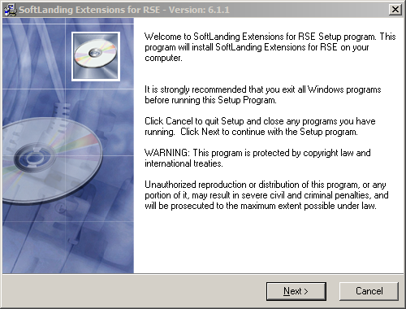
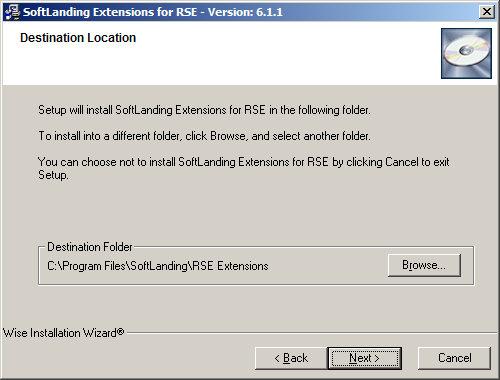
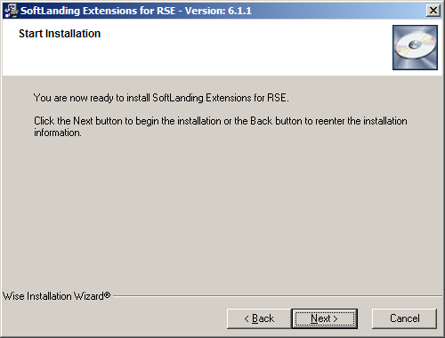
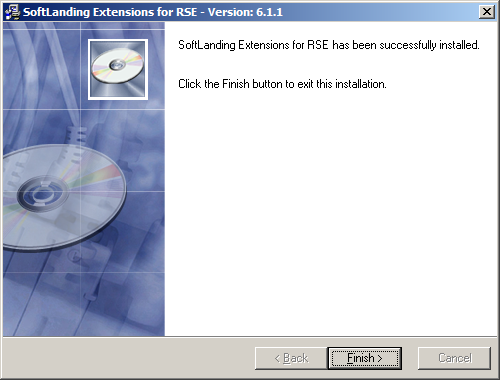

Installation/Update Instructions
These instructions guide you through the RSE Extensions installation and update process in WDSC 6.0.
If you have WDSC 7.x or other Eclipse 3.2-based IDEs, you must complete this installation routine, then manually install the RSE Extensions into your IDE. You do this by creating an "Eclipse Extension Location." Instructions to do this can be found near the end of this document.
Installing the RSE Extensions
Download
Download the installer. The latest version is always available at http://support.softlanding.com/opensource/rse_extensions.exe. Once you have it downloaded, double click to launch the installer.
Step 1:
The installer is a standard Windows install wizard; the screens are self-explanatory.
Step 2:
This screen shows the user agreement. As the heading indicates, the RSE Extensions are available under the terms of the IBM CPL v1.0, a fairly standard open source license agreement -- the same agreement under which Eclipse was originally licensed. (Eclipse now has its own version, called the Eclipse Public License, or EPL.)

Step 3:
Confirm the installation directory. It doesn't matter what directory you install into, as long as it is a new directory. Do not install the RSE Extensions into one of the WDSC directories.
Step 4:
This screen just confirms that the installer detects WDSC 6.0 on your computer. If the installer does not find it, you would see a different screen (not shown).

Step 5:
Another confirmation screen.
Step 6:
The final screen, which appears after the install has completed.
Post-installation instructions for WDSC 7.0 or other Eclipse 3.2-based IDEs
WDSC 7.0 requires that you manually complete the installation by creating an "Eclipse Extension Location."
- Start your IDE and go to: Help -> Software Updates -> Manage Configuration
- Once there, select the "Add an Extension Location" option
- Select the appropriate location based on where you installed the RSE Extenstions. The default path would be:
C:\Program Files\SoftLanding\RSE Extensions\eclipse
Your IDE may then require a restart for the plug-ins to become available.
After the installer completes
When the installer has finished, restart WDSC. Read the overview and, if you want to participate in the development of the RSE Extensions, the development instructions.
Updating the RSE Extensions
WDSC 6.0 and above have a feature in the Preferences that you can set to automatically check for updates. You can use this feature to update your RSE Extensions, as long as you are not behind a proxy server that does not allow this activity. You can check for updates manually by choosing Software Updates -> Find and Install from the Help menu. Follow the instructions provided by the wizard.
If you are behind a proxy server that will not allow WDSC's Updates feature to work, then you can install updates by downloading and installing the latest version, as described above. When you do this, the installer detects that the RSE Extensions are already installed, and skips most of the wizard screens.